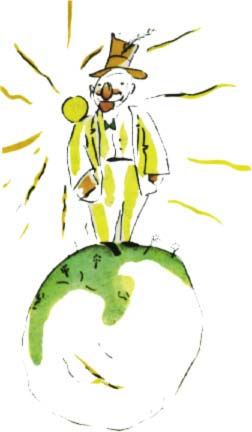

"Á, hleïme, pøichází mì nav¹tívit nìjaký obdivovatel!" zvolal zdálky domý¹livec, jakmile malého prince spatøil. Domý¹livci toti¾ vidí ve v¹ech lidech obdivovatele.
"Dobrý den," øekl malý princ. "Vy máte ale divný klobouk."
"To proto, abych mohl zdravit," odpovìdìl domý¹livec. "Abych mohl zdravit, kdy¾ mì s jásotem vítají. Bohu¾el tudy nikdy nikdo nejde."
"Tak?" odvìtil malý princ, proto¾e nepochopil.
"Zatleskej," poradil mu tedy domý¹livec.
Malý princ zatleskal. Domý¹livec pozvedl klobouk a skromnì pozdravil.
To je zábavnìj¹í ne¾ náv¹tìva u krále, øekl si v duchu malý princ. A zaèal znovu tleskat.
Domý¹livec znovu smekl a zdravil.
Ale kdy¾ to tak dìlal malý princ pìt minut, unavil se jednotvárností hry.
"A co se musí udìlat, aby klobouk spadl?" zeptal se.
Domý¹livec ho v¹ak nesly¹el. Domý¹livci sly¹í pouze chválu.
"Skuteènì se mi hodnì obdivuje¹?" zeptal se malého prince.
"Co to znamená obdivovat se?"
"Obdivovat se znamená uznat, ¾e jsem èlovìkem nejkrásnìj¹ím, nejlépe obleèeným, nejbohat¹ím a nejinteligentnìj¹ím na planetì."
"Ale v¾dy» si na planetì sám!"
"Udìlej mi tu radost, a pøesto se mi obdivuj!"
"Obdivuji se ti," øekl malý princ a pokrèil trochu rameny. "Ale jak tì to mù¾e zajímat?"
A malý princ zmizel.
Dospìlí jsou hroznì zvlá¹tní, øekl si jen v duchu cestou.